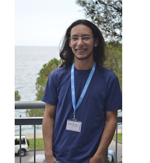

A bit about me...

{kind=link}
@ ICTP, in Trieste.
Photo by Hamidreza Bahari (2011)
I am a postdoctoral scholar at the Douglas lab, in the Dept. of Cellular and Molecular Pharmacology at UCSF. I've got my major in Physics at the Federal University of Sao Carlos (Sao Paulo, Brazil), in 2009. There, I was introduced to "The Art of MD Simulations" by professor JP Rino who advised me to investigate the role of particle-particle interactions for the assembly of configurations in 2D, both in colloidal and electronic systems. I joined the Glotzer lab by the summer of this year and, after learning about the recent discoveries made by Amir et al., got interested in the role of shape for assembling interesting structures in the nanoscale. Since then, I have - together with research investigator Michael Engel and under supervision of Sharon Glotzer - been investigating assembly of different building blocks and the structures that can be assembled from them. We have been successful in relating the shape of building blocks to the structure they assemble into and even predict what type of structure they will form based on simple measurements that can be performed in the liquid state of the system. My goal is to contribute to the development of a know-how necessary to reverse engineer target structures in the nanoscale.
When not playing with polyhedra, I am...
Playing guitar, riding my bike or laying in my hammock.... Also, good chance I will be a) enjoying a good cup of coffee or b) visiting one of the many breweries in Ann Arbor or c) grilling a brazilian bbq.
How to find me:
@ University of Michigan
Department of Chemical Engineering
2300 Hayward Street. Ann Arbor, MI 48109-2136, USA
or Online